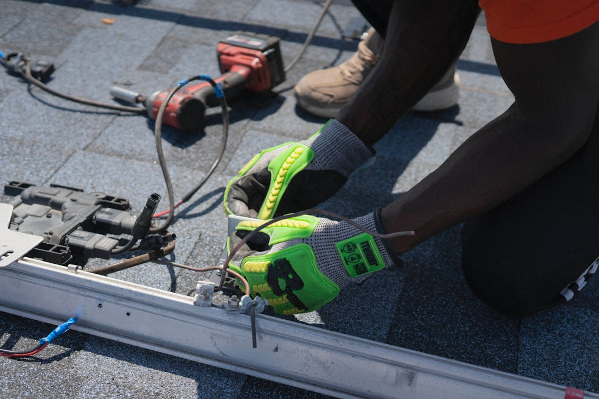

A sound Tampa roof decision starts with 4 checks: verify the Florida licence through DBPR, compare the written scope line by line, confirm permit responsibility in writing, and ask for observed findings before choosing repair or replacement. The source guidance separates 3 next steps, repair, inspection and replacement, and names 3 roof-covering paths, asphalt shingles, metal roofing and tile roofing. A useful enquiry should include visible symptoms, water entry, roof age if known, access and nearby structures.
For homeowners comparing roof repairs tampa options, the useful starting point is a written record of the roof condition, water-entry symptoms and property details before any scope is accepted.
Roof Repairs Tampa Explained
Roof Contractor Tampa frames the first roofing decision around what can be observed at the property: ceiling marks, displaced shingles, ageing materials and whether water is entering. Repair, inspection and replacement can look similar before a provider has traced the likely cause.
The source form asks owners to describe the property location, visible issue, when the issue began, previous repairs, approximate roof age if known, access and nearby structures. Photos can be supplied later if requested. The form also states that an enquiry does not confirm availability, timing, price, inspection or acceptance of the work.
For a repair conversation, ask what the findings show about the likely water path through coverings, flashing, valleys and penetrations. A ceiling mark alone does not show whether the issue is limited to the roof surface or also involves underlayment or decking.
Who This Applies To
This guide is for Tampa property owners who need to decide what to ask before accepting a roofing scope. It fits a visible leak, a displaced shingle, storm-related observations, an ageing roof, or two quotes that need to be compared on the same basis.
- Repair enquiry: ask for the observed defect, likely water path, repair area and exclusions.
- Inspection enquiry: ask what can be observed, what remains hidden and what next decision the findings support.
- Replacement enquiry: ask for tear-off, deck allowances, underlayment, ventilation, flashing, permits, cleanup and warranties in writing.
- Storm-related enquiry: keep safe observation and condition evidence separate from insurance decisions.
The related Tampa roof repair guide is a narrower reference for owners already focused on a repair path.
Compare Repair And Replacement As One Assembly
A repair option should not be compared with a replacement quote by headline wording alone. The source guidance treats the roof as an assembly. Asphalt shingles, metal panels and tile sit above supporting layers, and the condition of flashing, underlayment, decking and ventilation can change the written scope.
When the decision is not obvious, ask for both viable paths to be explained in writing. A repair scope should identify the likely defect and the area included. A replacement scope should make layers, materials, allowances, inspections and cleanup clear enough to compare line by line.
Tile roofing shows why surface appearance is not enough. The source text says tile appearance alone does not show the condition of the water-shedding layers beneath it. Metal roofing raises quote questions about the system, fasteners, penetrations, edges and warranty conditions. Shingle guidance points owners toward the complete assembly, not colour or headline warranty alone.
Permit And Licence Questions In Tampa
The source checklist puts provider verification and permit responsibility near the front of the decision. It says to check the contracting business's current Florida licence and scope through DBPR before signing, and to confirm permit responsibility in writing.
The guidance does not give a blanket permit answer for every job. It says the property jurisdiction and work scope determine the permit and inspection route. Ask the provider to state who is responsible for permits and inspections before the work is accepted.
For any written roofing estimate, keep the licence check, permit responsibility and inspection route beside the material scope. That makes the administrative part of the job visible before an owner compares warranties, cleanup and exclusions.
What A Written Estimate Should Show
A useful estimate should let an owner compare like with like. The source guidance names materials, layers, deck allowance, flashing, ventilation, cleanup, exclusions and warranties as items to review line by line.
Ask the provider to state what is included, what is excluded and what would trigger a change after work begins. If decking cannot be assessed until tear-off, the allowance should be visible in the quote. If flashing is part of the likely water path, the estimate should say whether it will be repaired, replaced or left outside the proposed work.
Cleanup belongs in the written scope beside materials and warranty terms. If two estimates use different cleanup wording, ask each provider to clarify the included work before treating the prices or warranty language as comparable.
Prepare A Better Enquiry
The source guide is careful about what an online enquiry can do. It can organise roof facts before a provider responds. It cannot inspect the roof remotely, lend a future provider credentials, confirm acceptance of the work or guarantee timing.
Prepare a short factual summary before contacting anyone. Include the roof covering if known, approximate age, visible symptoms, when the issue began, any previous repair, whether water is entering, access issues and nearby structures. Keep photos to safe observation if requested later. That information gives the provider a clearer starting point for deciding whether repair, inspection or replacement is the next useful conversation.
- Record the symptoms. Write down the visible roof issue, when it began, whether water is entering and any previous repairs.
- Check the provider. Verify the contracting business's current Florida licence and scope through DBPR before signing.
- Compare the scope. Review materials, layers, decking allowance, flashing, ventilation, cleanup, exclusions and warranties line by line.
- Confirm permits. Ask who is responsible for permits and inspections for the property jurisdiction and work scope.
| Decision | Use when | Ask for in writing |
|---|---|---|
| Repair | The issue appears localised or tied to a visible defect | Observed condition, likely water path, repair area and exclusions |
| Inspection | The cause or scope is unclear from visible symptoms | What was observed, what remains hidden and the next recommended decision |
| Replacement | The assembly, covering or supporting layers may need broader work | Tear-off, deck allowance, underlayment, ventilation, flashing, permits, cleanup and warranties |
Common questions
Should I ask for repair or replacement first? Ask for findings first. The source guidance says the decision depends on where the damage is, how widespread it is, the roof covering and the condition of the deck, flashing and underlayment.
Does every Tampa roofing job follow the same permit route? No blanket route is stated in the supplied guidance. It says the property jurisdiction and work scope determine the permit and inspection route, so permit responsibility should be confirmed in writing.
What should I include in a roofing enquiry? Include the property location, visible condition, roof covering if known, approximate age, when the issue began, previous repairs, water entry, access and nearby structures.
Can an online enquiry confirm price or availability? No. The source form states that submitting the enquiry does not confirm provider availability, timing, price, inspection or acceptance of the work.
This guide covers Tampa roof repair, inspection and replacement decisions using source guidance on findings, written scopes, permits, licence checks and enquiry preparation.